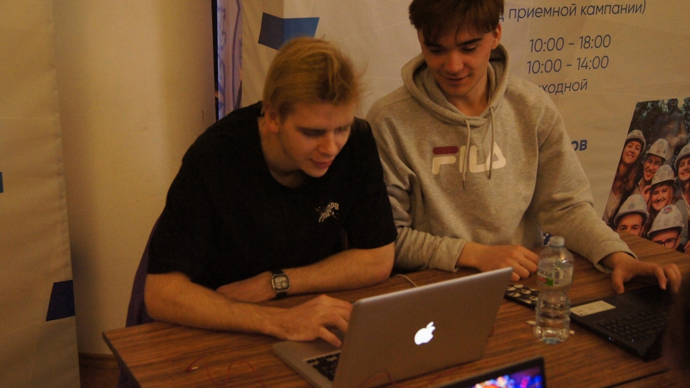

Профессиональные навыки:
— Опыт работы на должности экономиста — 5 лет.
— Знание налогового законодательства, бухгалтерского и налогового учёта.
— Навык разработки, внедрения и ведения управленческого учета.
— Умение разрабатывать финансово-экономические модели.
— Опыт анализа, планирования и регламентации финансово-хозяйственной деятельности.
— Навык планирования и контроля исполнения бюджетов.
— Знание видов себестоимости, методов ценообразования.
— Опыт составления аналитических отчётов.
Дополнительные сведения:
Благодаря инициативности и целеустремлённости я постоянно стремлюсь к повышению эффективности работы, ищу возможности для её улучшения.
Полное среднее
-Критическое мышление
-Социальный интеллект
-Креативность
-Информационная грамотность
-Цифровая грамотность
-Медиаграмотность
-Гибкость, готовность меняться
-Инициативность
oooooooo@mail.ru
+78005553535